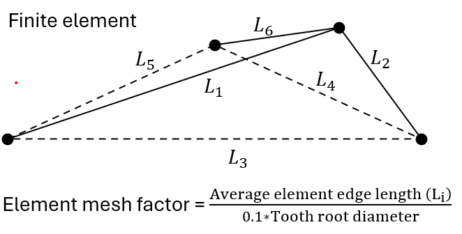

|
|
|


计算设置
齿轮体和齿轮使用相同的材料，除非已定义轮缘（齿轮轮缘定义 A）。在这种情况下，齿轮轮缘和齿轮使用相同的材料，只有齿轮体的材料可以不同。齿轮轮缘厚度既可以在 选项卡中直接定义，也可以使用指定的齿轮直径计算。
您还可以选择不同的 FE 网格密度。对于 定义选项，有四种不同的网格密度级别（低、中、高或非常高）可用。如果导入 STEP 文件 定义选项，则可以使用一个系数（网格单元系数）输入平均单元尺寸。网格单元系数（见图 15.93）定义为平均单元长度与齿根圆直径 10% 的比值。

图 15.93：定义网格单元系数
如果将 选项设置为"不考虑"，则由不同输入产生的网格会自动显示和修改。
Calculation settings
The same material is used for the gear body and the gear, unless a rim has been defined (gear rim definition A). In this case, the same material is used for the gear rim and the gear and only the material of the gear body can be different. The gear rim thickness is either defined directly in the tab or calculated using the specified gear diameter.
You can also select different FE mesh densities. Four different levels of mesh density (low, medium, high or very high) are available for Definition option. If a STEP file Definition option is imported, the average element size can be input using a factor (mesh element factor). The mesh element factor (see Figure 15.93) is defined as the ratio between the average element length and 10% of the root diameter.
Figure 15.93: Defining the mesh element factor
If you set the option to “Do not consider”, the mesh resulting from the different inputs is displayed and modified automatically.